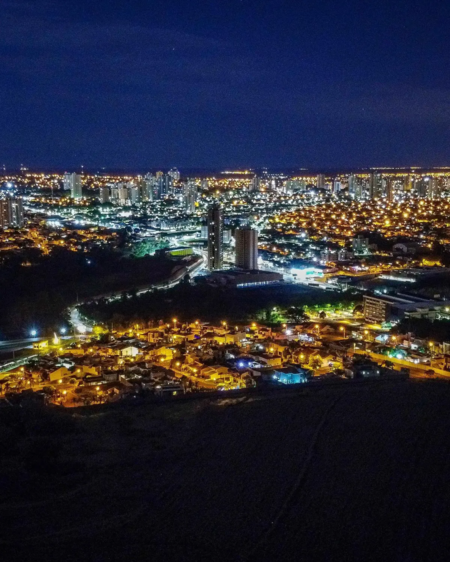

Araraquara
Apresenta o mesmo IDHM de Santo André (0,815), mas fica um pouco atrás no item renda, o que coloca o município na oitava posição. A cidade está localizada na região central do estado, tem cerca de 224 mil habitantes e abriga um dos campus da Universidade Estadual Paulista “Júlio de Mesquita Filho” (Unesp). Há discordâncias quanto ao significado do nome da cidade. Uma versão o traduz do tupi com o significado “toca de arara”, mas há a hipótese de que a tradução mais precisa seja “morada do Sol”.
Com quase 200 anos de história, Araraquara tem várias construções antigas, mas não há um mapeamento definido dos imóveis. O último imóvel considerado histórico e protegido por lei municipal aconteceu em 2005. Segundo a Coordenadoria de Preservação do Patrimônio Histórico e Cultural, há 28 imóveis tombados, sendo oito particulares.
